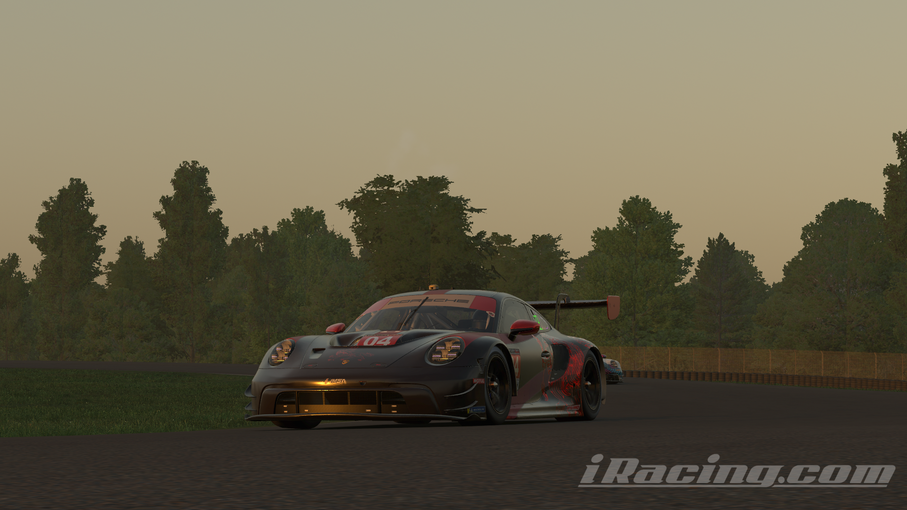

Què és Chimera Racing Team?
Chimera Racing Team és un equip virtual de competició al món del simracing, es a dir, competeix a carreres virtuals organitzades a simuladors de cotxes, com Assetto Corsa Competizione o iRacing.
Perquè es va crear?
Es va crear inicialment com un equip no oficial, només per tenir una manera de competir a events fets per equips, i no estava pensat per competir per resultats, encara que amb el pas del temps ha anat cresquent i ara ja es pot considerar un equip decentment seriós.
On competeix?
Actualment l'equip té només dos jocs principals, un és Assetto Corsa Competizione i l'altre es iRacing. La majoria de carreres són a iRacing ja que hi ha moltes més oportunitats de conseguir bons resultats, per exemple, van guanyar la seva respectiva categoria a l'event de les 6 hores de Indianapolis aquest passat septembre.
Resultats Notables:
| Joc | Data | Event | Posició |
|---|---|---|---|
| Assetto Corsa Competizione | 28-29/06/2025 | 24 Hores de Nordschleife | P5/50 |
| iRacing | 23/08/2025 | Tour de Resistència a Virginia (6hr) | P2/80 |
| iRacing | 06/09/2025 | Battle on the Bricks (6 hores de Indianapolis) | P1/50 |